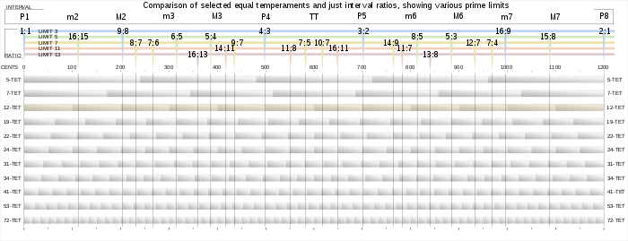

Hello there!
Welcome to my blog. Here, I write about anything that I find interesting. This spans quite a few topics, but is mostly computer science and/or math-related. Enjoy! -Gabriel
You can find an archive of my articles here.
My latest posts are below:
6,498 Emails from 215 Colleges View as article
What 2 years on the Student Search Service does to your inbox
By Gabriel Thompson August 18, 2023
Definitely one of the worst decisions I made during high school was signing up for the CollegeBoard's "Student Search Service". For those who aren't familiar, the service claims that it will help you "connect with colleges and scholarships" to fund your higher education.
This sounds appealing, but in reality it means that you'll receive thousands of obnoxious emails from colleges telling you to apply. Emails like this one:

Apparently Tulane decided that the only way to appeal to the modern generation was by sounding like a Twitch streamer. While sometimes these emails were good faith attempts to inform me about the college, the vast majority were as garbage as Tulane's.
I was curious about which colleges sent me the most emails and if there were any patterns in when they emailed me, so I downloaded my email history and wrote a Python program to find when every college emailed me. Here's a visualization I made of the result (right click and open in a new tab and zoom in to see in greater detail):
The first graph shows when I received emails from each of the 216 colleges. Each square represents how many times a given college emailed me a given week. Each college labeled on the y-axis has a unique ID number indicating where the college is on the chart, so that in this post I can refer to a college by it's name and number and it's easier to find. The second graph shows how many college emails I received in total per week.
The earliest email I received from any college was from Carnegie Mellon University (#1), although this was because I had indicated interest in CMU on Naviance, so it doesn't really count. The first promotional email I got from a college I didn't express interest in was from Tulane University (#2) on October 3rd, 2021. Even in August 2023, I still occasionally get emails from schools like UMass Dartmouth (#213).
It's interesting to see how some colleges changed the amount of emails they sent over time. For example, Case Western Reserve University (#11) sent me regular emails in increasing frequency until slowing down in August 2022, but still did continue to send me weekly-ish emails until their deadline in January 2023.
You can also see a peak in the lower graph around early August 2022 right after the Common App dropped and another two around the EA/ED and RD deadlines of November and January. At the same time as these peaks, you can also see vertical straight lines in the first graph, because a lot of colleges were emailing me in the same week.
The colleges that emailed me the most were:
- Curry College (#34) - 232 emails
- Case Western (#11) - 210 emails
- Seton Hall University (#72) - 145 emails
- Nova Southeastern University (#6) - 136 emails
- Siena College (#17) - 131 emails
- Franklin & Marshall College (#8) - 109 emails
- Utica University (#197) - 104 emails
- Hofstra University (#29) - 99 emails
- High Point University (#43) - 94 emails
- Roanoke College (#24) - 93 emails
Of the 6,498 emails I received, 1,845 contain the word "Gabriel" (my name) in the subject line. For some reason, colleges think that by putting the recipient's name in their email subject lines, the email will attract their attention? I don't really get this tactic myself, but a lot of colleges do it.
Siena College is the master of this, more than 80% of the emails they sent me contained my name in their subject. Some of their greatest hits include:

Anyways, I find it really uncomfortable to see colleges that I've never heard of pretending to be on a first-name basis with me. It's phony and weird.
Another tactic that some colleges used was constantly extending their deadline so that they could send me repeated emails claiming that their "deadline was approaching." Nova Southeastern did this several times:
You can visibly see Seton Hall University (#72) extending their deadline six times on the visualization earlier in the article. Their original RD deadline was February 1st, but they kept on extending it until as late as June 30th, so that they could have a reason keep sending me emails telling me to apply as late as then.
Another interesting pattern is that more selective, highly-ranked schools tended to email me less, and their emails tended to me less obnoxious. Ivy League colleges only emailed me 15 times on average, and none of these emails my first name in the subject line. MIT and Stanford didn't email me at all.
Anyways – I found this experiment mildly interesting and I hope this can serve as a warning to Juniors on why not to sign up for the Student Search Service.
Why Music Has 12 Notes View as article
The mathematical basis for 12-tone equal temperament
By Gabriel Thompson July 31, 2023
Image credit: https://commons.wikimedia.org/wiki/File:Equal_Temper_w_limits.svg
Last year, I took the course "AP Music Theory" at my school, which covers the same material as a college-level introductory harmony course. I learned a lot in the course about writing and analyzing 18th-century four-part harmonies (really interesting stuff (that's not sarcastic)), all of which was based upon the premise the idea that music is made up of twelve notes. However, the course never proved this premise, or even really addressed it. Isn't it ridiculous that a student can take a year-long course in music theory and, by the end of it, not be able to explain why music uses twelve notes? Smh my head 🤦♂️. This article is my attempt to provide an acoustics-based foundation for the twelve-tone system used in AP Music Theory that is regretfully missing from the CollegeBoard's curriculum. If you're currently taking AP Music Theory, I hope that by reading this article you'll gain a deeper appreciation for the 12-tone system and also learn a bit about acoustics along the way!
You've probably heard of the idea that all sound is just a "wave". If you've seen a diagram of a sound wave, it might've looked something like this:

The above diagram shows the relationship between time and air pressure experienced by the listener while a pitch being played. In other words, if you were to play a tone from a speaker or a musical instrument, and then record the air pressure next to the source over time, the relationship would resemble the chart above.
There are two important things to notice about the sine wave in the above graph: its wavelength and its amplitude. These two attributes define pitch and loudness of the tone -- a shorter wavelength means that the pitch will sound "higher" and a higher amplitude of the graph will make the pitch sound "louder".
Not all real-world pitches are perfect sine waves (most aren't) but all real-world pitches "oscillate". In fact, it is this oscillation that makes a musical note sound like a note to our ears. This is what defines a pitch.
Because of evolution, our ears are really good at being able to identify the presence and speed of oscillations in a sound wave (it was evolutionarily advantageous for your ancestors to be able to tell if the loud sound coming from nearby their cave originated from a large mammoth or a small rabbit's vocal chords). Typical humans can recognize notes as low as 20 Hz and as high as 20,000 Hz, although most music falls in the 100 Hz to 1,500 Hz range.
The properties of sound waves become a lot more interesting when you consider multiple waves played simultaneously. If two different frequencies are being played at the same time, the sound wave perceived by a listener is the sum of the two component graphs. For example, if the frequencies 330 Hz (roughly an E4) and 660 Hz (roughly an E5) are being played, the resulting time-air pressure graph would look something like \(\sin{(330 * 2x\pi)} + \sin{(660 * 2x\pi)}\), where \(x\) is the number of seconds elapsed (the \(2\pi\) is to scale the wavelength so that 330 or 660 periods fit into \(1\) second, rather than \(2\pi\) seconds). On a graph, this would look like:

To the listener, the resulting pitch won't sound quite like a 330 Hz wave, nor will it sound quite like a 660 Hz wave. Your ears will perceive some of both frequencies. Looking at the waveform, this should make some sense. The absolute peaks and troughs of the wave are occurring on a slower 330 Hz cycle, while there also appears to be a faster waveform on a 660 Hz cycle closer to the vertical center of the graph.
So what does the combination of these two frequencies sound like? The following audio clip plays first the 330 Hz wave for 1.5 seconds, then the 660 Hz wave for 1.5 seconds, and then both frequencies simultaneously for 1.5 seconds.
The two notes sound harmonious together (or as music theorists would say, "consonant") -- so much so that they sound almost like one note when played simultaneously. Let's look at another example of adding two frequencies together. However, instead of the frequency ratio being 1:2, we'll try 1:1.3 (in this case, 330 Hz and 429 Hz).
Clearly, this pitch interval sounds a lot "worse" than the 1:2 ratio. But why? We get some insight into this if we look at its waveform:

(note: I've changed the x-axis scale here from the previous graph to show more periods)
Looking at the above graph, it's a lot less obvious where the 330 Hz and 429 Hz frequencies that comprise it are. There certainly seems to be some oscillation going on, but at this small scale, it's difficult to point to any specific repeated patterns that indicate component frequencies. Likewise, when you hear this waveform, it's difficult for your brain to process it as two frequencies rather than as one confusing waveform. According to scientists, the exact way that your brain parses a waveform and identifies (or fails to identify) its component frequencies is partially handled by hair cells on the cochlea -- although it's still a very mysterious process that's not entirely understood to this day. You can read more about that hear (haha it's a pun).
The bottom line is that harmonies that have more easily identifiable oscillations sound "better" to humans. These harmonies tend to have frequency ratios that can be expressed as a ratio of two small integers (a 2:1 ratio sounds a lot better than a 13:10).
What other frequency ratios would sound good? A 3:2 ratio (330 Hz and 495 Hz in this case) would, because just like a 2:1 harmony, it's a simple integer ratio. Take a listen:
If you have any background in music theory, you'll immediately recognize that interval as a perfect fifth. You might've also recognized the pervious 2:1 ratio as an octave. Much like the octave, the perfect fifth also sounds very stable. Here's its waveform:
We can clearly see a pattern repeating every 0.006 seconds or so. Let's take a look at another simple integer ratio, 4:3 (330 Hz and 440 Hz in this case):
This is another recognizable interval -- it's a perfect fourth. By choosing simple pitch ratios, we seem to be rediscovering the most fundamental pitch intervals in Western music. This is not a coincidence, and it isn't isolated to just perfect fifth and perfect fourths. For example, here's what a 5:4 pitch ratio sounds like:
This a major third. If we look at a 5:3 ratio, we get:
This one is a bit less obvious, but it is actually a major sixth. And if we look at a 6:5 ratio, we get:
... a minor third. If you're a musician living in an ancient society before harmony was discovered and you were the first person to discover that these intervals sound good, the next logical step would be to create an instrument to allows you to play all of them. Imagine you have a magical strip of tape that allows you to play any pitch on it within the span of an octave by pressing some position on the tape, where pitches on the right are higher and pitches on the left are lower (kind of like a piano). You can create marks on the instrument to notate which pitches you want to include in your "scale". The instrument might look something like this:
This is pretty cool -- now you're able to play any of the intervals we discussed relative to the lowest note on the instrument. You can even play major chords on it (330 Hz, 412.5 Hz, and 495 Hz for example). However, our instrument has major limitations. For example, it's impossible to play a major chord with 495 Hz (the fifth) as the root. You'd need to play the frequencies 618.75 Hz (the third from the fifth) and 742.5 Hz (the fifth from the fifth), but neither are accessible on our labelling system.
The reason for this is that our scale isn't "equal-tempered", which is another way of saying that the ratios between each of the adjacent notes aren't equal. As a result of this, it's not always possible to transpose a chord or a melody (such as transposing the major root chord up a fifth) because the gaps are uneven. Another related problem is that our instrument is stuck in one key, so all music played on it would have to be based around the root frequency 330 Hz. This is very musically limiting.
A solution to this problem is to use an equal-tempered system, where the ratio between each note of our scale is equal. For example, a 4-tone equal temperament (a.k.a. 4TET) system would contain four evenly spaced notes per octave (important note: by "evenly spaced" I mean geometrically not arithmetically, so the ratio rather than the difference between the frequencies of adjacent notes is equal). In our 4TET system, we'll call the frequency ratio between adjacent notes \(r\). For our purposes, \(r^4\) must equal \(2\), so \(r = 2^{1/4} \approx 1.1892\). More generally, for any \(n\)-TET system, the ratio between adjacent notes will be \(2^{1/n}\).
The problem with an equal tempered scale is that the ratios of intervals tend to be very irrational, making most equal tempered scales sound very bad. An ideal equal tempered scale would be able to form intervals that closely approximate the clean pitch ratios of our instrument above (6:5, 5:4, 4:3, 3:2, 5:3, 2:1), even if they aren't exactly right. That way, it would be to change keys and transpose chords and melodies, while still having consonant intervals.
By pure coincidence, a 12-tone equal tempered system does an incredibly good job at this. In a 12TET system, you have access to the following pitch intervals:
\(2^{1/12} \approx 1.05946\)
\(2^{2/12} \approx 1.12246\)
\(2^{3/12} \approx 1.18921\) (close to 6/5 = 1.2)
\(2^{4/12} \approx 1.25992\) (close to 5/4 = 1.25)
\(2^{5/12} \approx 1.33484\) (very close to 4/3 = 1.333...)
\(2^{6/12} \approx 1.41421\)
\(2^{7/12} \approx 1.49831\) (very close to 3/2 = 1.5)
\(2^{8/12} \approx 1.58740\)
\(2^{9/12} \approx 1.68179\) (close to 5/3 = 1.666...)
\(2^{10/12} \approx 1.78180\)
\(2^{11/12} \approx 1.88775\)
\(2^{12/12} = 2\) (octave)
This is the tuning system used by almost all instruments today. Any time that you've heard a perfect fifth, you actually weren't hearing a 1.5:1 ratio but rather a 1.498:1 ratio.
Although 12TET does compromise accuracy on some of the intervals (especially the minor 3rd, major 3rd and major 6th), it still does a good enough job on approximating them that most people don't think they sound particularly "out-of-tune" even though they technically are. And besides, the benefits of being able to transpose are much greater than the minor loss of accuracy on some of the notes.
Earlier in this blog post, when I played the 5:4 and 6:5 pitch ratios, some of you might've actually noticed that they sounded slightly out-of-tune (here's a the 6:5 again):
This is because the 6:5 (or 1.2:1) ratio is slightly sharp of the 1.189:1 minor third you're probably used to hearing. Although the 6:5 is technically a more "pure" ratio than the 12TET approximation, most people get so used to the approximation that the clean ratio version of the minor third sounds out-of-tune to them.
As a result of creating an equal-tempered system to approximate the consonant intervals, a lot of dissonant intervals are added to our scale to fill in space. The minor 2nd, major 2nd, tritone, minor 7th, and major 7th all sound dissonant. The minor 6th also sounds dissonant in isolation, although it can sound major in certain contexts because it's an inversion of a major third. This is why some of the notes in the 12TET system sound "good" and why others sound "bad" -- the 12-tone equal temperament system wasn't designed to have a tritone or a minor second, but it was impossible to allow for the consonant intervals without keeping the dissonant ones.
Although 12-tone equal temperament is by far the most common scale used in the West, it's not the only one. Defenders of "53-tone equal temperament" argue that including 53 equally spaced notes in a scale instead of 12 gives you better approximations of the consonant intervals. 53TET knocks 12TET's perfect fifth approximation out of the park, with 31 semitones giving a \(2^{31/53} \approx 1.499941:1\) ratio, much better than \(1.498:1\). 53TET also approximates a major third as 17 semitones, or a \(2^{17/53} \approx 1.248984:1\) and a minor third as \(2^{14/53} \approx 1.200929:1\).
53-tone equal temperament has yet to catch on in mainstream music. Although it does approximate the consonant ratios much better than 12TET, it adds dozens of unpleasant intervals into the octave. As you might imagine, this makes it very challenging for a musician to decide which of 53 notes in an octave to play. It also requires pianos and other instruments to change their layouts to allow for 53 notes per octave, which makes most instruments bulky and hard to use. But that's hasn't stopped people from creating microtonal instruments themselves!
Why the Mandelbrot Set is very cool View as article
A Beginner's Introduction to Complex Numbers and Fractals
By Gabriel Thompson January 31, 2022 (OLD POST)
If you've lived in the world for a moderate amount of time, there's a good chance that you've seen this:

Image credit: https://jixta.wordpress.com/2015/04/03/mandelbrot-fractal-in-java/
This image is known as the Mandelbrot set, and it's quite possibly the most culturally influential piece of mathematics. But what is it? What is it made of? How is it generated? Why is it so significant?
In order to answer all of the above questions, we first need to talk about imaginary and complex numbers.
Imaginary and complex numbers
For some numbers, taking their square root is trivial. For example, \(\sqrt{4} = 2\), \(\sqrt{9} = 3\), \(\sqrt{25} = 5\), et cetera. For other numbers, their square roots are irrational. For example, \(\sqrt{3}\) can not be written as an integer, or even as a decimal, but rather can only be approximated as roughly 1.732.
There are, however, some numbers that can't be expressed as a "real" number at all. Consider \(\sqrt{-1}\). What would this be equal to? You might instinctively say that it's \(-1\), but this isn't true, because \((-1)^2=1\), not \(-1\); the negatives cancel out. The truth is that there isn't a "real" solution to \(\sqrt{-1}\). If we want to find the value of \(\sqrt{-1}\), or the square root of any other negative number, we essentially need to invent new numbers.
To represent the square root of negative numbers, mathematicians decided that instead of using decimal numbers, they would use the symbol \(i\) to represent \(\sqrt{-1}\). By using \(i\), we can also represent the square root of any negative number. For example, we can represent \(\sqrt{-9}\) as \(3i\), because \(\sqrt{-9} = \sqrt{9} * \sqrt{-1} = 3 * \sqrt{-1} = 3i\). Multiples of \(i\) are known as imaginary numbers, because they don't express a measurable quantity, rather, an "imaginary" construct. Other numbers, that don't require \(i\) to be represented, are known as real numbers.
However, there's more numbers to explore than just imaginary and real numbers. For example, what if we take the sum of an imaginary number and a real number? A number such as \(3 + 5i\) is neither a real nor imaginary number, rather, it's a combination of both real and imaginary numbers, that can't be expressed alone as either. Numbers that can be represented as a sum of a real number and an imaginary number are known as complex numbers. \(3 + 5i\), and \(-7 + 2.5i\), and \(10^9 + \ln(2)i\) are all complex numbers, because they have a real and imaginary component. In addition, a number like \(6\) is also a complex number, because it is the same thing as \(6 + 0i\). In fact, every single number that there is, is a complex number. Complex numbers are the most broad set of numbers that is possible, because they include every number.
Operations on complex numbers
But why should we care about complex numbers? What's the purpose of them? Well, one thing that makes complex numbers amazing is what happens when you perform mathematical operations on them.
Adding and subtracting complex numbers is pretty simple, you just add or subtract the real and imaginary components of each number. For example, \((3 + 5i) + (2 + 4i) = 5 + 9i\). In this example, all that's happening is that the real and imaginary components of the first number are being added to the second (\(3 + 2 = 5\) and \(5i + 4i = 9i\)). The same applies for subtracting -- \((3 + 5i) - (2 + 4i) = 1 + i\), because \(3 - 2 = 1\) and \(5i - 4i = 1i\) (or just \(i\)).
However, complex numbers get most interesting when you try to multiply them. Complex numbers are multiplied the same way that binomials are -- by taking the sum of every pair of two terms. For example, imagine multiplying the complex numbers \(2 + 7i\) and \(-3 + 6i\). You could do the following to simplify:
$$(2+7i)(-3+6i)$$$$(2 * -3) + (2 * 6i) + (7i * -3) + (7i * 6i)$$$$-6 + 12i - 21i + 42i^2$$$$-6 - 9i + 42i^2$$
It would appear that \((2+7i)(-3+6i)\) would evaluate to \(-6-9i+42i^2\). But WAIT! If \(i = \sqrt{-1}\), doesn't \(i^2 = -1\)??. This means that we can actually do the following: $$-6-9i+42i^2$$$$-6-9i+42(-1)$$$$-6-9i-42$$$$-48-9i$$
And here, we see that \((2+7i)(-3+6i) = -48-9i\). The nuance of this -- and what makes complex number multiplication so interesting -- is that instead of just adding each component, you essentially end of subtracting the last pair of components, because of the weird properties of \(i\).
The complex plane
The last thing that we need to understand before we can understand the Mandelbrot set is something called the complex plane. We typically represent real numbers on a 1-dimensional number line, something like this:

The number line is an amazing visual representation of real numbers -- you can easily see if one number is larger than another, or how large the difference between two numbers is. However, it's domain is limited only to real numbers. If you wanted to represent all complex numbers, you would need to use two dimensions, one to represent the real component of a complex number, and one to represent the imaginary component of this complex number. This system of representing numbers is known as the complex plane:

(Apologies for my Google Drawings-quality diagrams)
As you can see above, the complex plane has two axis -- a real axis, and an imaginary axis. The real axis is horizontal, and the imaginary axis is vertical. Any complex number can be represented as a point on the complex plane. For example, in the following diagram, \(3+5i\) is represented as a point on the complex plane:

Any complex number is represented in virtually the same way that one would represent Cartesian coordinates on an xy-plane, by plotting any complex number at the intersection of the vertical perpendicular to the real component and the horizontal perpendicular to the imaginary component.
The Mandelbrot set
Now that we understand how complex numbers and the complex plane work, we're finally ready to understand the Mandelbrot set! The mandelbrot set is generated by the following process: For each complex number \(c\), we create a series \(z\), where \(z_0=c\). Then, we calculate each next term of \(z\) through the following formula $$z_{n+1}=z_n^2+c$$ If, as \(n \to \infty\), \(z_n\) continues expanding forever, we consider that point to not be in the Mandelbrot set. If \(z_n\) doesn't expand forever, we say that it is part of the mandelbrot set.
That likely made very little sense, so let's look at it in action. We'll let the number \(c = 0.5 + 0.5i\). Then, we'll create a series \(z\), which will be initially equal to \([(0.5+0.5i)]\), or in other words, will have one item, which is equal to \(c\). Then, we'll calculate square of the last number in \(z\), plus the original number \(c\), and this result will be the next item in \(z\). So, the next item in \(z\) will be: $$(0.5+0.5i)^2+(0.5+0.5i)$$ Using complex number multiplication and addition, this simplifies as follows: $$(0.25+0.5i+0.25i^2)+(0.5+0.5i)$$$$(0+0.5i)+(0.5+0.5i)$$$$0.5+i$$ So, the next item of \(z\) is \(0.5+i\). \(z\) is now equal to \([(0.5+0.5i), (0.5+i)]\). To calculate the next item, we run the same process -- calculating the square of the last item of \(z\), plus \(c\) (or plus the first item). So, we would do the following: $$(0.5+i)^2+(0.5+0.5i)$$$$(0.25+i+i^2)+(0.5+0.5i)$$$$(-0.75+i)+(0.5+0.5i)$$$$-0.25+1.5i$$ Here, we have calculated that the next item of \(z\) is \(-0.25+1.5i\), so \(z\) is now equal to \([(0.5+0.5i), (0.5+i), (-0.25+1.5i)]\). If we repeat this process again and again, the next items will be (approximately): $$-1.6875-0.25i$$$$3.285+1.344i$$$$9.487+9.329i$$$$3.468+177.498i$$ It appears that as we repeat this process -- squaring the last number, then adding that to the \(c\) -- the value is growing larger and larger. Indeed, if we continue calculating the next values of \(z\), they will approach infinity. However, this is not true for some other numbers. For example, take \(c=0.1+0.4i\). If we keep on taking the square of the last value and adding it to \(c\), we get the following next terms: $$-0.05+0.48i$$$$-0.128+0.352i$$$$-0.008+0.31i$$$$0.004+0.4i$$$$0.104+0.8i$$$$-0.522+0.565i$$$$0.053-0.19i$$ Interesting! As we keep iterating the recursive formula \(z_{n+1}=z_n^2+c\) where \(c=0.1+0.4i\), the result doesn't appear to be expanding to infinity.
So here's the question: for which values of \(c\) does \(z\) expand forever, and for which values of \(c\) does \(z\) stay bounded? Well if, on the complex plane, we color the values of \(c\) where \(z\) does stay bounded in black, and color the values of \(c\) where \(z\) expands to infinity in white, we get the following:

The image above is essentially a map of which numbers satisfy the property that, when repeatedly squared and added to their original value, do not expand to an infinity. It's certainly not what anyone would've expected.
Here's a higher-definition version, that is colored in accordance with how fast each value of \(c\) expands to an infinity:

All that's being done to generate this image is squaring and adding complex numbers. Maybe you'd expect some form of parabola, or ellipse to be generated. But instead, you get neither. You get a shape that's a sort of cardioid, but bordering other circles on the outside. Off of the circles on the side, there are infinitely spiraling branches. The edge is rough, it never seems to settle. The circle to the left of the main cardioid seems to be connected by an infinitesimally small bridge.
The mandelbrot set, however, goes much deeper than what is shown. Zooming into specific parts of the mandelbrot set can yield results like this:

It's amazing to think that the mandelbrot set is something generated by such a relatively simple equation. The infinite complexity doesn't look like something that a deterministic system could generate. It looks more like a work of art by a mentally-ill ballroom ceiling painter from the Victorian period. I think part of what makes the mandelbrot set so "weird" is that it's unpredictable, but it's not chaotic. It's shape and character vary drastically in different regions, but it's also oddly natural in its shape. There's nothing predictable about the mandelbrot set, but it's all familiar. In fact, you can even find smaller versions of the mandelbrot set that are exactly the same as the original. That's right, the mandelbrot set is even a fractal too! A few of these smaller versions are actually visible in the branches of the above image.
When people say that the mandelbrot set is an example of how math can be visually beautiful, I absolutely agree. The mandelbrot set is an amazing shape to explore for hours. In fact, there are plenty of YouTube videos that are just extended zooms into the mandelbrot set, to an absurdly high precision. But I think that describing the mandelbrot set as aesthetically pleasing overshadows the real beauty of it, which is intellectual. It's intellectual beautiful how perfectly deterministic rules can yield such organic and frankly, bizarre, results.
The mandelbrot set is not the only fractal generated by a recursive function applied to complex numbers, there's plenty of others. For example, the "Julia Set" is a set of fractals that bear many similarities to the mandelbrot set, including the equation used to generate it; but that's a story for another time.
I think it's really sad that the mandelbrot set doesn't get taught more in schools. To a certain extent, the mandelbrot set's existence is an utterly useless piece of information to most people. You most likely will not need to use the mandelbrot set on your next tax returns (it would be very cool if you did though). But this kind of math is also incredibly intellectually enriching. It seriously calls into question everything we know about mathematics, and to a certain extent, the way the universe works. Observing the Mandelbrot set feels a bit like tapping into a part of the universe we weren't supposed to explore. I cannot deny, it is a bit spooky.